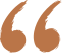
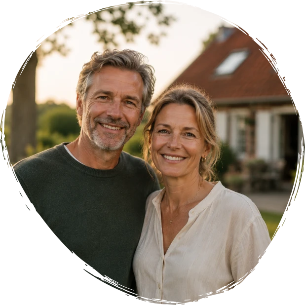
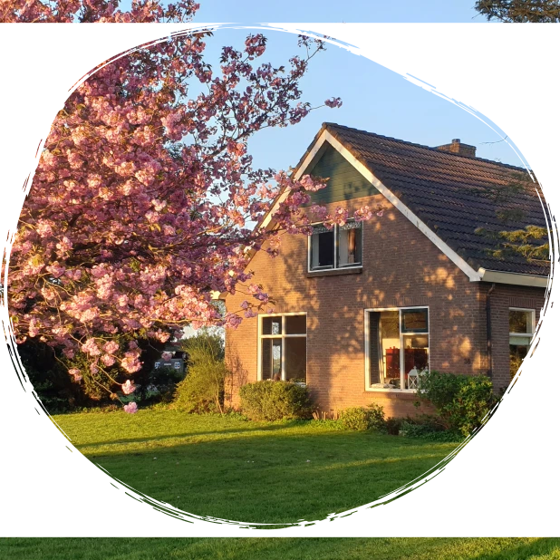
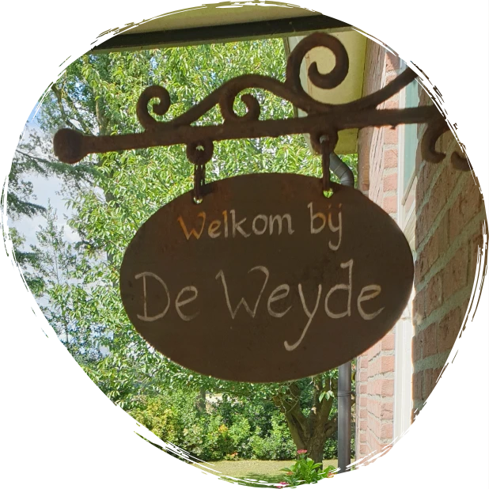

Landelijk vakantiehuis
Samen genieten van rust en ruimte
Verblijf met 2 tot 12 personen in onze ruime vakantiewoning, midden in het groene landschap van Westerwolde.

Ontdek De Weyde
Binnen warm, buiten vrij
Binnen geniet je van een ruime woonkamer en comfortabele slaapkamers.
Buiten wacht een grote tuin met uitzicht over het Groningse landschap.

Een plek waar je
echt tot rust komt
We hebben met onze kinderen en kleinkinderen een heerlijk weekend gehad. De ruimte, de natuur en de rust maakten het voor iedereen bijzonder.Familie De Vries

Ontdek het vakantiehuis
Alles wat je nodig hebt
voor een ontspannen verblijf
- Maximum aantal personen: 12
- 110 m² woonoppervlakte
- Gratis wifi
- Huisdieren toegestaan
- Parkeren bij de woning
- Wasmachine en droger
- Kinderbedje aanwezig
- Rookvrije woning
- Eigen laadpaal voor elektrische auto
- Inductiekookplaat
- Quooker
- Vaatwasser
- Oven
- Nespresso koffiemachine
- Koelkast met vriesvak
- Waterkoker
- Broodrooster
- 3 badkamers
- Inloopdouche
- Ligbad
- Extra toilet
- Toilet in badkamer
- Finse sauna
- Haardroger
- 4 slaapkamers
- 8 éénpersoonsbedden
- Bedlinnen aanwezig
- Kinderbedje aanwezig
- Kledingkasten
- Flatscreen TV
- Sonos geluidssysteem
- Ruime zithoek
- Houtkachel
- Gezellige eethoek
- Spelletjes en boeken
- Grote privétuin
- Terras met tuinmeubilair
- Loungeset
- Schommel en zandbak
- BBQ aanwezig
- Vrij uitzicht over het landschap
- Omheinde tuin
Waarom De Weyde
Een plek met aandacht
voor elkaar
Een plek om samen te zijn
De Weyde is ontstaan vanuit onze liefde voor rust, ruimte en het buitenleven. We wilden een plek creëren waar families en vrienden even kunnen ontsnappen aan de drukte van alledag. Waar je rustig wakker wordt met uitzicht op het groen, samen uitgebreid ontbijt en de dag afsluit met een goed gesprek op het terras.
De tuin is misschien wel onze favoriete plek. Zodra de zon zich laat zien, drinken we er graag een kop koffie of genieten we van een lange zomeravond. We hopen dat onze gasten daar hetzelfde gevoel van rust en vrijheid ervaren als wij.
Onze liefde voor het buitenleven
Naast De Weyde runnen we met veel plezier onze ecologische kwekerij. Daar werken we dagelijks met bloemen, planten en het landschap om ons heen. Die aandacht voor natuur en seizoenen zie je ook terug in De Weyde: in de tuin, de groene omgeving en de rustige manier waarop we onze gasten ontvangen.
Ontdek onze kwekerij




